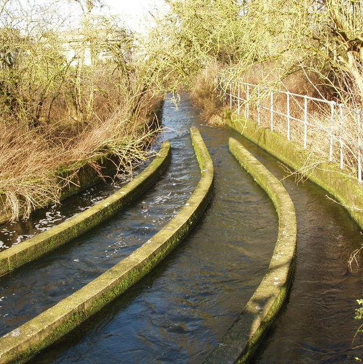

Overview
Fabrik Wasser
Hausehalt Wasser
Abwasser in die Stadt
Landwirtschaft Wasser
Sources

Herstellung von 1kg of Rindfleisch werden etwa 20,000 Liter
Vor Butter herzustellen 5 bis 10 Liter Wasser
 Vor Butter herzustellen 5 bis 10 Liter Wasser
Vor Butter herzustellen 5 bis 10 Liter Wasser